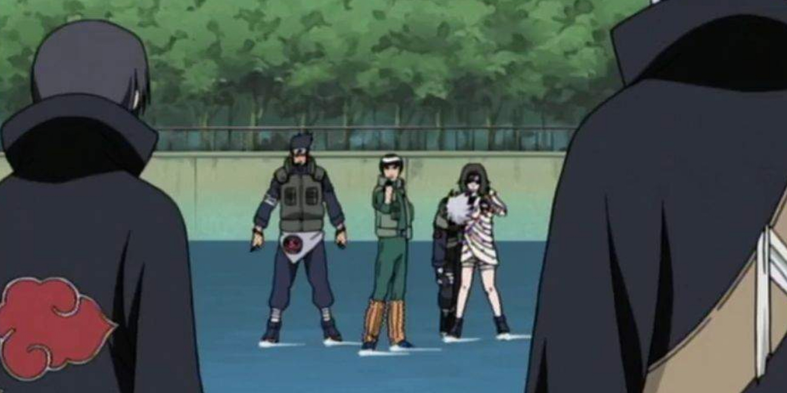

Tenzo & Tetsuo
Deux frères, Deux fauves


Qui sont Tenzo & Tetsuo
Tenzo & Tetsuo sont deux frères du prestigieux clan Uchiha de Konohagakure. De nature très enfantine, ils passèrent la plupart de leurs journées à s’amuser dans la cour de leur domaine, ils sortaient très peu en dehors du domaine du clan parce qu’ils préféraient l’ambiance de leur clan. Grâce à ces journées ils développèrent une relation très fusionnelle. Cependant au cours des ans, cette relation semble se détériorer peu à peu. Pour cela que lorsqu’ils avaient tous deux sept ans, leur père décida de ressouder leurs relations et, les emmenant en voyage près du pays de la pluie. Ce voyage changea malheureusement la vision que les deux frères avaient de l’inconnu…

"L'art n'est pas beau par son apparence, le véritable art est beau de sens, ainsi reconnaît-on un artiste."
-Tetsuo Uchiha

Lors d’un voyage au pays de la pluie, les deux frères décident d’aller s’aventurer dans un hameau de ce pays. Lorsque les frères rentrèrent dans le hameau, ils virent un enfant qui semblait très jeune accompagné d’un homme, ils se trouvaient à peu près à 60 mètres des deux frères. Lorsque les deux frères décidèrent de s’aventurer plus en profondeur dans le hameau, cependant ils furent interrompus, par trois ninjas qui passèrent en saut de chakra au-dessus d’eux, heureusement, les deux frères n’avaient pas été repérés par les ninjas. Les deux frères s’arrêtèrent net, et regardèrent les ninjas se rapprocher de l’enfant et de son père qu’ils avaient aperçus un peu plus tôt. Ils virent la scène plutôt flou étant donné la distance les séparant de la scène. Cependant ils purent distinguer qu’il y avait un conflit entre l’homme ainsi que les trois ninjas. Après 5 minutes qui semblaient interminables pour nos deux frères, Tetsuo vit un des trois ninjas faire un mouvement qui lui faisait penser qu’il sortait quelque chose de sa poche. Tetsuo prévient alors Tenzo de ce qu’il avait µcru apercevoir. Tenzo qui était de nature très serviable, souhaitait aider plus que tout l’homme qui se trouvait en face des ninjas. Mais Tetsuo ne perdit pas son sang froid, et empêcha Tenzo de risquer sa vie pour rien. Malheureusement, le fait que Tetsuo ait essayé d’arrêter son frère, leur a fait perdre le fil de la scène, et lorsqu’il canalisa son attention vers les ninjas, les deux virent seulement l’homme qui semblait avoir sorti quelque chose de sa poche faire un mouvement brut, et l’homme tomba raide au sol. Les ninjas rentrèrent dans les tentes des villageois, et pillèrent ce qu’ils pouvaient piller, et ils tuèrent les villageois qui essayaient de les résister. Suite à cela, les ninjas s’en allèrent, laissant le hameau sans ressources, avec plus de la moitié des habitants morts ou blessés. Les deux frères rentrent dans leur campement avec leur père. Suite à cela, ils racontèrent ce qu’il s’était passé. La nuit tombée, Tetsuo fût rongé par la culpabilité et il prit conscience de la dure réalité qui l’entourait tandis que Tenzo restait souriant malgré que l’on puisse décelé une part de tristesse dans son sourire. Tetsuo fait part de son ressenti à son père et à son frère. Après cette nuit le voyage qui ne faisait fût écourté, et ils rentrèrent au pays du feu afin de s'entraîner pour pouvoir si un événement pareil se produisait, que ces deux frères puissent défendre les villageois.

"Ce qu'on risque révèle ce qu'on vaut."
- Tenzo Uchiha


Suite aux événements qui ont précédé, Tetsuo et Tenzo décidèrent de changer les choses pour ne plus être dans de telles impaces,
c’est pour cela qu’a l’âge de 8 ans Tetsuo et Tenzo commencèrent à s'entraîner à la maîtrise du chakra avec leur père.
Le début fût très dur, ils accumulent les échecs, cependant un bout d’environ neuf mois, les deux frères se montrèrent doués à
la maîtrise du ninjutsu de feu nommé “Katon”, quelque chose d'inné chez le clan Uchiha. Lors d’un entraînement près de cascades,
ils développèrent tout deux après des efforts acharnés, la faculté de mélanger les éléments de l’eau “Suiton” ainsi que l’air “Futon” ainsi de maîtriser
le “Kekkei Genkai” de glace autrement nommé “Hyoton”. Cet événement marque un renouveau dans leur liens, parce qu’en plus d’être liés par le sang,
ils sont maintenant liés par leur nature de chakra élémentaire ainsi que leur “Kekkei Genkai” ainsi que leurs objectifs.
Après les deux années qui ont passées, arrive l’examen qui déterminera s'ils sont prêts à sortir de l’académie.
La veille de l’examen, alors que Tetsuo était totalement prêt à performer lors de l’examen, Tenzo semblait réellement stressé par la situation,
craignant qu’il ne puisse sortir de l’académie en même temps que son frère. Il décide donc de mettre son égo de côté, et de demander à son frère de l’aide
pour ces révisions. Ils passèrent la nuit entière à réviser. Le jour de l’examen, les deux frères étaient exténués à cause de la nuit passée, cependant
ils semblaient prêts à enfin sortir de

"La parole entraîne, l'exemple enseigne."
- Tetsuo Uchiha
La Famille Uchiha

Le clan Uchiha est un des deux prestigieux clan fondateur du village de Konohagakure. Ce clan occupe une place centrale au sein du village malgré que le domaine du clan soit le domaine le plus excentré du palais du maître Hokage. Le clan Uchiha est un clan plus que jamais redouté pour leurs capacités au combat. Également ils sont réputés pour leurs fameuses pupilles écarlates : “Le Sharingan”, qui certes aident au combat, mais se développent à la suite de tragiques événements. Le clan Uchiha peut susciter admiration de la part d’autrui mais généralement, il évoque la terreur. Malgré tout cela, le clan est grandement défini par la puissance de leurs émotions qui, lorsqu'un Uchiha subit un choc mental, peut irriter la pupille des membres du clan, créant la manifestation du Sharingan”.
"Mes yeux sont une malédiction, ceux qui croiseront mon regard seront maudits"
-Tetsuo Uchiha

Objectif 1 (long terme) :
Ils souhaitent également protéger leur maître Hokage, symbole de la prospérité du village de Konohagakure,
c’est pour cela qu’ils souhaitent créer une garde rapprochée de celui-ci afin de l’escorter lors de ces déplacements, et devenir les bras armés de l’Hokage.
Ils souhaitent également intégrer le haut commandement de Konoha afin de montrer au village que le clan Uchiha abrite dorénavant des ninjas fidèles au village,
et aux convictions fortes. Et donc ainsi redorer l’image du clan Uchiha au sein du village de Konoha.

Objectif 2 (Moyen terme) :
Les deux frères de nature très loyale, ils auront une haine envers les traîtres de Konoha, c’est pour cela qu’ils souhaiteront créer une unité spéciale afin de traquer les traîtres de Konoha.
Objectif 3 (Court terme) :
Lors de leur vie de ninja, ces deux frères souhaitent rendre fier leur père, pour cela ils souhaitent intégrer les forces de police de Konoha. Également ils veulent aider les villageois dans leurs tâches quotidiennes, aider à la reconstruction du village lors d’incident.


Katon
Hyôton

Dôjutsu
Le katon est la nature de chakra phare du clan Uchiha, Tenzo et Tetsuo ne sont pas si différents sur ce point là, ils maitrisent le Katon comme la plupart de leur clan, Ils seront capable de créer des murs de feu dès le plus jeune âge.
Les deux frères maîtrisent le Hyoton, l'art de manipuler la glace qui mélange le Suiton ainsi que le Futon. Cela leur permet de mélanger le feu du katon ainsi que la glace de leur Hyoton afin de perturber leurs adversaires
Les membres du clan Uchiha sont généralement décrit par une même chose, leur don héréditaire, un des dôjutsus les plus crains du monde Shinobi, le sharingan, Tenzo et Tetsuo n'échappent donc pas à la règle, dans leur sang coule aussi ce don héréditaire et convoité par autrui
-Taille :
Tenzo : 1m54 | Tetsuo : 1m56
-Poids :
Tenzo : 50 kilos | Tetsuo : 53 kilos
-Corupulence :
Chaqu'un : musculature moyenne
-Cheveux :
Chaqu'un : Cheveux noir
-Caractères :
Tenzo & Tetsuo sont deux personnes qui aiment la vie leurs but et de partager leurs joies de vivre, cependant ils restent tres mefiants vis a vis des autres et ne font confiances qu’a eux memes et leurs proches

Qualités Tenzo
- Joyeux
- prêt à partager
- Aidant
- intelligent
- Fidèle
Défautls Tenzo
- Trop confiant par moment
- trop méfiant
- très émotifs

Qualités Tetsuo
- Souriant
- Intelligent
- Réfléchit
- Très sérieux
- Loyal
- Pragmatique
Défautls Tetsuo
- Condescendant
- Méfiant
- Anxieux
Merci de m'avoir lu !